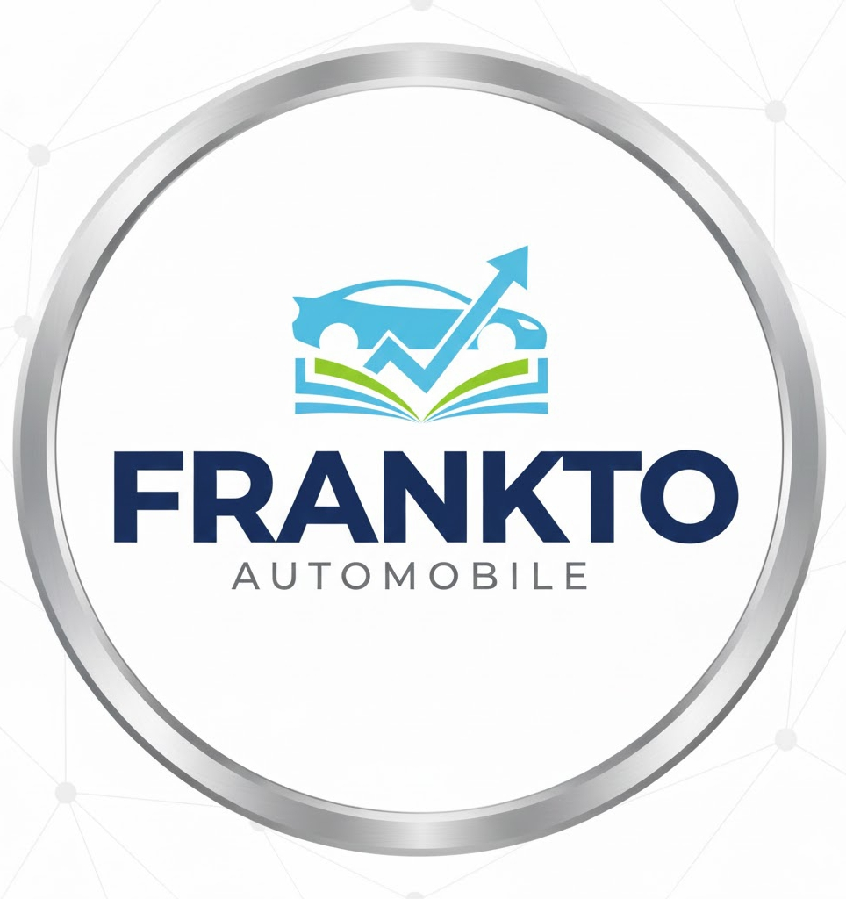

Frankto Entrepreneur
Frankto Entrepreneur is owned by the CEO Emeka Okorie Frankto Entrepreneur operates in vehicle transportation and automobile services. Its transportation services are highly ranked, widely available, and reliable, making it one of the best transportation industries.
Frankto Entrepreneur
- Motor parts
- Transporation
About the CEO
Emeka Okorie
Chief Executive Officer (CEO)
Automobile and Transporations
Under Emeka Okorie leadership, Frankto Entrepreneur is driven by a vision to create smarter, safer, and more efficient transportation systems. The CEO strongly believes that the future of mobility lies in technology—whether in vehicle design, digital transport platforms, or intelligent movement solutions. Is an innovative and forward-thinking Chief Executive Officer of Frankto Entrepreneur, a company committed to transforming the automobile and transportation industries through technology. With a strong background in tech engineering, digital systems, and modern mobility solutions, the CEO has built a company that blends transportation with the power of advanced technology.
Known for creativity, smart thinking, and problem-solving, [CEO Name] uses technology to improve how people move, connect, and experience transportation. Their passion for innovation has made Frankto Entrepreneur a rising force in modern mobility.
Known for creativity, smart thinking, and problem-solving, Emeka Okorie uses technology to improve how people move, connect, and experience transportation. Their passion for innovation has made Frankto Entrepreneur a rising force in modern mobility..
Leadership Vision
Emeka Okorie leadership, Frankto Entrepreneur is driven by a vision to create smarter, safer, and more efficient transportation systems. The CEO strongly believes that the future of mobility lies in technology—whether in vehicle design, digital transport platforms, or intelligent movement solutions.
Their leadership focuses on:
- Designing modern automobiles powered by smart technology
- Improving transportation with digital tools and systems
- Creating eco-friendly and cost-effective transport solutions
- Supporting research and development in automotive tech
- Building a brand recognized for quality and innovation
Achievements
- Developed innovative auto designs and mobility concepts
- Created digital systems that improve transport management
- Worked with communities to enhance transportation access
- Built partnerships within the technology and automobile sectors
- Trained young people in engineering, tech innovation, and mobility solutions
Mission of the CEO
The mission of Emeka Okorie is to make Frankto Entrepreneur a leader in the future of transportation—combining automobile engineering with advanced technology. The CEO is dedicated to creating solutions that improve movement, reduce stress, and bring smarter transport systems to everyday life.
Emeka Okorie is a visionary tech leader shaping the future of automobile and transportation innovation. With a passion for technology and mobility, the CEO continues to drive Frankto Entrepreneur forward as a bold and impactful company in the modern world
back